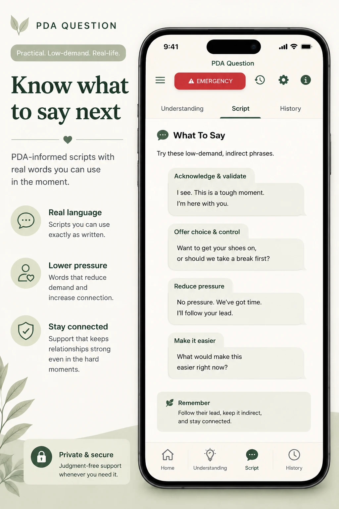

Available on the App Store
PDA Question
Designed for iPhone. Calm educational support for hard neurodivergent moments.
Before you submit a question
Questions are processed to generate your response. Avoid including names or identifying details, and review the Privacy Policy for information about data handling.
PDA Question is an educational support tool. It does not provide diagnosis, medical or mental-health treatment, or emergency services.